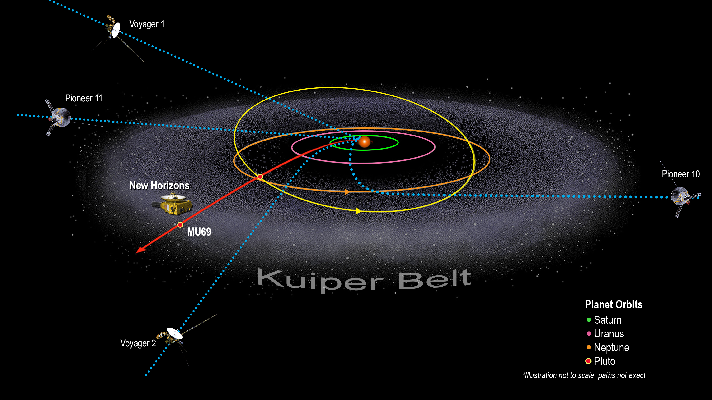

Поясът на Кайпер е част от Слънчевата система. Представлява околозвезден диск, разпростиращ се отвъд планетите. Подобен е на Астероидния пояс, но е много по-голям – 20 пъти по-широк и от 20 до 200 пъти по-масивен. Съставен е основно от малки тела или останки от формирането на Слънчевата система. Въпреки че много астероиди са съставени от скали и метали, повечето обекти в Пояса на Кайпер са съставени основно от замръзнали летливи вещества (ледове), като метан, амоняк и вода. В Пояса на Кайпер са разположени три официално признати планети-джуджета: Плутон, Хаумея и Макемаке. Някои от луните в Слънчевата система, като Тритон и Феба, е възможно да водят началото си от тук. В пояса на Кайпер са открити над 800 обекта (подмножество на транснептуновите обекти), почти всички от които са открити след 1992 г. Двата най-големи обекта с потвърдени размери са Плутон и Харон. След 2000 г. са открити и други обекти със сходни размери.
Още информация за Пояса на Кайпер
Пояс на Кайпер